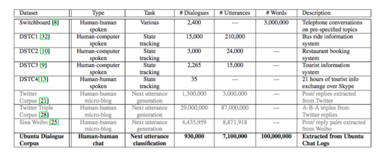

The Ubuntu Dialogue Corpus: A Large Dataset for Research in Unstructured Multi-Turn Dialogue Systems #PaperWeekly#
本文分享的paper构建了一组大型非结构化的、多轮的对话系统语料，使用的原始数据来自Ubuntu IRC Logs，是一些关于Ubuntu的讨论组聊天数据。paper的题目是The Ubuntu Dialogue Corpus: A Large Dataset for Research in Unstructured Multi-Turn Dialogue Systems，作者是来自蒙特利尔大学的博士生Ryan Lowe。
数据规模在100万左右，平均每组数据有8轮对话，最少包括3轮对话。之前的bot语料包括：Dialogue State Tracking Challenge(DSTC)、SwitchBoard这类结构化的数据和Twitter、Sina Weibo这种非结构化的数据，前者专注于预测用户的需求和状态，而后者数据中包括了一定数量的非“conversational in nature”，做bot的训练数据并不那么合适。本文构建的数据集是一个特定领域内的数据，ubuntu technical conversations，规模很大，对话轮数很多，质量很高，也是后续很多paper在研究bot response问题时常常采用的corpus。

语料的构建非常有意义，大型的语料可以训练更加复杂的、偏向open domain的bot model，小型的语料可以解决具体的工程应用问题，如何从杂乱无章的unstructured data中提取出有用的信息，构造出一个适合训练、测试的数据集是一个很难却十分有意义的工作。
本文需要的数据是多轮的、两人的对话数据，但原始的数据是多人无序的对话数据，作者采用了一些小的技巧，并且忽略了一些不合适的数据，将原始数据处理成一个四元组：
(time,sender,recipient,utterance)
在构造模型的训练和测试集时，作者将上面的四元组处理成下面的三元组：
(context,response,flag)
context类似于用户输入，flag表示response是否是context相关联的，关联则为1，否则为0。
给定了数据集，下面就是作者提供的benchmark model，三个非常简单的model，tf-idf，rnn和lstm，目的是为了从response candidates中选择k个最适合context的response作为答案，然后计算相应的准确率。paper中给的方法是selection的方法，而不是generation，后面的很多研究都是generation，真正地从user query生成response。
本文提供的ubuntu dialogue corpus对于task-oriented、response generation的研究有着非常重要的意义，相比于华为给的微博数据，有更强的conversational in nature特征，更加适合对话生成的研究。本文作者的另外一篇survey文章A Survey of Available Corpora for Building Data-Driven Dialogue Systems,系统地介绍了各大数据集。